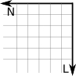
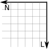

Revisão de Álgebra Linear para CG
Anderson Tavares
Universidade de São Paulo
Uma dimensão
- Zero (nenhuma ovelha)

- Devendo uma ovelha

- E os pobres sem poder comprar a ovelha inteira?
- Números racionais \(\frac{31415}{10000}\)
- Número decimal \(3,1415\).
Duas dimensões


 
